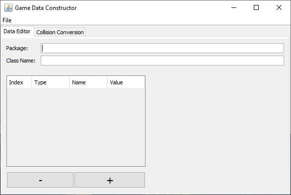
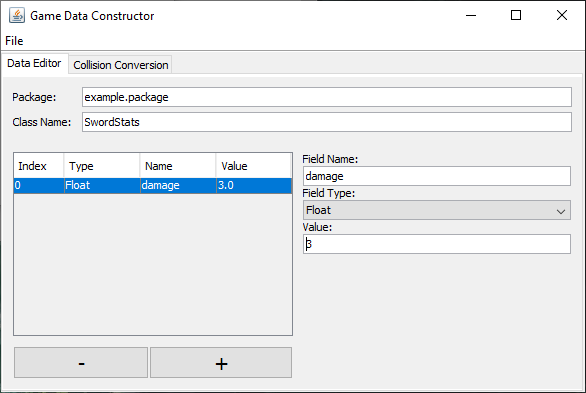
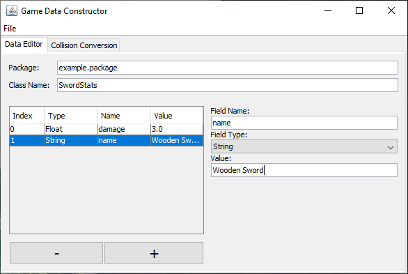
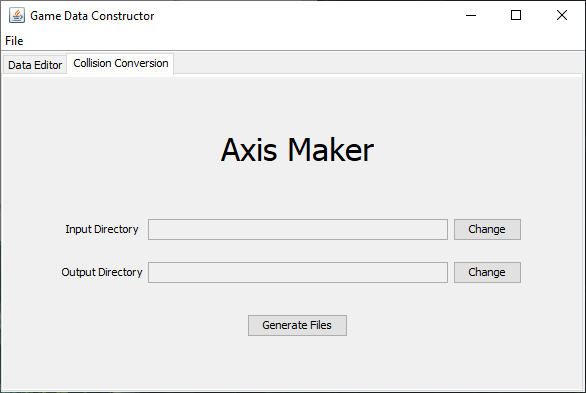

Game Data Constructor
The game data constructor is a useful tool for constructing data into a file to be used by some sort of program, such as my custom 2D game engine. For example, it can be used to construct a file that contains the stats of a sword, which may contain the damage value or name of the sword.
 At the moment, the program builds data into a custom file format, but in the future, I may update the program to build different file formats such as JSON, XML or other custom file formats.
The program also comes with a handy collider generator, which generates 2D convex polygon colliders in an appropriate format when given a folder with 2D images.
You can find a link to download the program in the repository below: